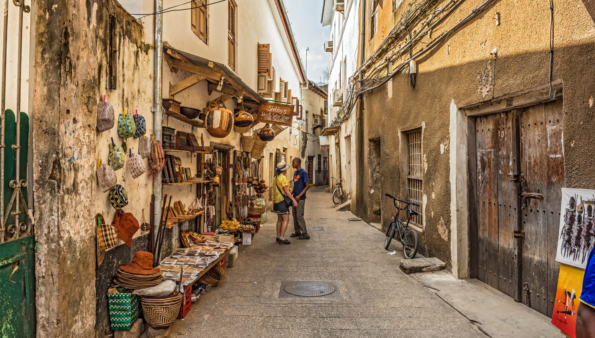

🌴 Zanzibar • 10 jours
🗓️ Avril 2026
👨👩👧👦 Famille
Guide premium (dark mode) + carte interactive. Objectif : choisir ensemble les spots, organiser les journées, et partager facilement le lien.
Photos : mets tes images en local dans images/ et remplace les fichiers (ex: images/j01_1.jpg).
Astuce : garde toujours le même format (ex: 1600×1000) pour un rendu parfait.
🗺️ Carte interactive
Zanzibar — Spots & catégories
Arrivée
Jours
Best Of
Annexes
Soirée
Clique un spot → liens rapides (Google / Waze). Recherche automatique “+ Zanzibar Tanzania”.
🚗 Trajets & repères
Transferts + fourchettes (à affiner)
Zanzibar fonctionne surtout en taxi / chauffeur. Les prix varient selon saison, négociation et heure.
Repères rapides (ordre d’idée) :
Repères rapides (ordre d’idée) :
- Aéroport (ZNZ) → Stone Town : ~ 10–20 min • ~ 15–30€
- Stone Town → Nungwi/Kendwa : ~ 60–90 min • ~ 40–70€
- Nungwi/Kendwa → Paje/Jambiani : ~ 75–110 min • ~ 45–80€
- Paje/Jambiani → Stone Town/ZNZ : ~ 50–80 min • ~ 35–65€
⚠️ Ce sont des fourchettes “pratiques” pour le planning. On pourra les ajuster avec les vrais prix quand tu veux.
🧭 Logement conseillé (équilibré)
2 + 4 + 4 nuits
Stone Town (2 nuits) → culture/visites •
Nungwi/Kendwa (4 nuits) → plages sans trop d’effet marée •
Paje/Jambiani (4 nuits) → lagons, bancs de sable, ambiance plus “nature”.
✅ Activités “ados-friendly”
Top 6
Snorkeling (Mnemba) • Sunset dhow • Plages Kendwa • Jozani (singes) • Prison Island (tortues) • Bancs de sable / lagon Paje.
🗓️ Programme — 10 jours
Jour 1 — Arrivée + Stone Town (soft)
Check-in, balade simple, premier coucher de soleil (rooftop). Dîner tranquille.

Photo 1 (à remplacer) — Stone Town vibes

Photo 2 (à remplacer) — Sunset rooftop
🗓️ Jour 2
Stone Town + Prison Island (tortues)
Ruelles, marché, portes sculptées. Excursion Prison Island pour les tortues + baignade si ok.

Photo 1 (à remplacer) — Stone Town

Photo 2 (à remplacer) — Tortues
🗓️ Jour 3
Transfert Nord — Nungwi / Kendwa + plage
Installation au nord. Plage + chill (Kendwa est top pour le sunset).

Photo 1 (à remplacer) — Arrivée nord

Photo 2 (à remplacer) — Sunset Kendwa
🗓️ Jour 4
Mnemba (snorkeling) ou journée plage
Option bateau snorkeling (souvent dauphins/snorkel selon conditions) ou full plage.
📍 Mnemba (zone)
🔎 Google

Photo 1 (à remplacer) — Snorkeling

Photo 2 (à remplacer) — Plage nord
🗓️ Jour 5
Nungwi — village + plage + sunset dhow (option)
Balade, photos, et option bateau traditionnel (dhow) au coucher du soleil.

Photo 1 (à remplacer) — Nungwi

Photo 2 (à remplacer) — Dhow sunset
🗓️ Jour 6
Journée libre Nord (repos / beach club)
Journée “respiration” : plage, piscine, activités au choix.

Photo 1 (à remplacer) — Chill

Photo 2 (à remplacer) — Beach vibes
🗓️ Jour 7
Transfert Est — Paje / Jambiani + lagon
Changement d’ambiance : grands espaces, lagon, bancs de sable selon marées.

Photo 1 (à remplacer) — Lagon Paje

Photo 2 (à remplacer) — Banc de sable
🗓️ Jour 8
Blue lagoon / snorkeling (option) + coucher de soleil
Excursion lagon (selon opérateurs) ou journée plage + sunset.

Photo 1 (à remplacer) — Blue lagoon

Photo 2 (à remplacer) — Sunset
🗓️ Jour 9
Jozani Forest + Spice Tour (combo)
Singes colobus rouges + mangroves. Puis visite épices (rapide, ludique).

Photo 1 (à remplacer) — Colobus

Photo 2 (à remplacer) — Épices
🗓️ Jour 10
Dernier jour + retour (flex)
Selon horaires : plage, souvenirs, dernière baignade, puis transfert vers ZNZ.

Photo 1 (à remplacer) — Dernière plage

Photo 2 (à remplacer) — Souvenirs
🟢 Best Of
Les incontournables
À cocher en famille : chacun choisit 2 “must do”.
🏛 Stone Town (culture)
1/2 journée
Ruelles, marchés, ambiance. Top au coucher de soleil en rooftop.
🐢 Prison Island
2–4h
Tortues géantes + excursion facile.
🐠 Snorkeling Mnemba
Demi-journée
Eau claire, poissons, sortie bateau.
🌅 Kendwa sunset
Soir
Un des meilleurs sunsets (photos dingues).
🟡 Annexes
Options si on a du temps / selon météo
À garder sous le coude pour les journées “flex”.
🌿 Mangroves (Jozani)
1–2h
Promenade sur passerelles, super photos.
🌶 Spice Tour
1–2h
Ludique et rapide, parfait en famille.
🏖 Jambiani walk
Fin d’aprem
Promenade bord de mer, ambiance plus locale.
🪁 Paje (kitesurf)
Selon vent
Regarder / tester, grosse ambiance.
🟣 Soirées
Idées “soir” (sans se compliquer)
Kendwa sunset • Dîner fruits de mer • Rooftop Stone Town • Balade marché de nuit (si dispo).